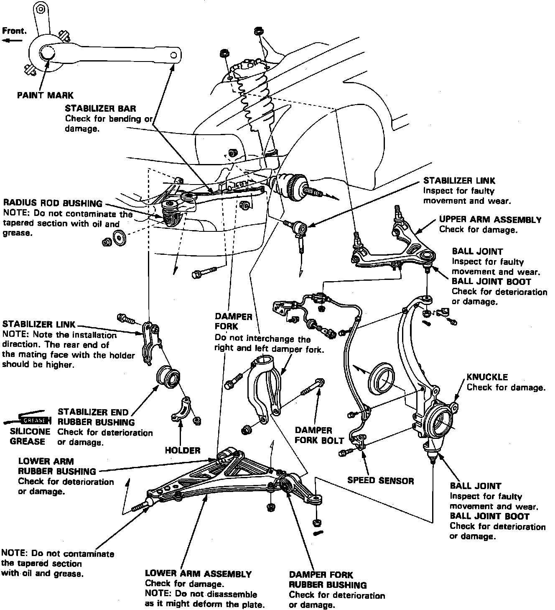

Operation CHARM
: Car repair manuals for everyone.
Home
>>
Acura
>>
1994
>>
Legend Sedan V6-3206cc 3.2L SOHC FI
>>
Repair and Diagnosis
>>
Steering and Suspension
>>
Suspension
>>
Radius Arm
>>
Service and Repair
Radius Arm: Service and Repair
Fig. 5 Exploded View Of Front Suspension Components:

Refer to
Fig. 5
for
radius rod
replacement.